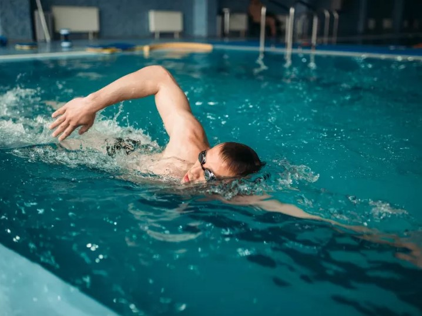

Kraul jest najszybszym spośród wszystkich stylów pływackich. Podczas pływania kraulem sylwetka przybiera najbardziej opływowy kształt, dzięki czemu przemieszczając się nie musimy tracić dodatkowej energii na stawianie oporu wodzie.
Niestety, styl ten nie jest prosty w nauce – wymaga bardzo dokładnego opanowania techniki, w której największe znaczenie ma praca ramion i płaskie ułożenie ciała. Dużą trudność dla początkujących pływaków stanowi zanurzanie rąk w wodzie pod odpowiednim kątem.
